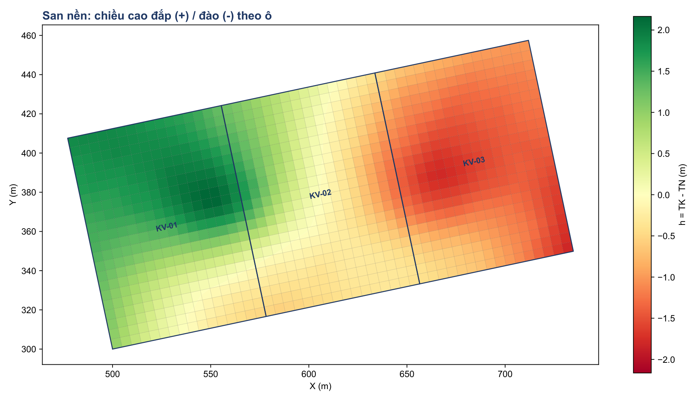

Làm được gì
Hai cách tính song song
Lưới ô theo cách quen dùng và mô hình TIN chính xác, để đối chiếu ngay.
Taluy và đường gãy
Nhập hệ số mái đào, đắp. TIN ép theo mép mương, bờ taluy.
Cân bằng đào đắp
Tìm cao độ san phẳng cân bằng, đường cong khối lượng, cân đối đất theo hệ số K.
Tự xử lý ranh giới
Nhiều khu, cắt phần chồng lấn, lấp khe hở, ranh giới hình bất kỳ.
Tự kiểm tra số liệu
Điểm trùng, điểm dị thường, ô thiếu điểm đo, chênh lệch giữa hai cách tính.
Dùng trong AutoCAD
Lệnh SANNEN mở tool, SANNENKQ chèn kết quả đúng tọa độ.
Hình ảnh



Hình dùng khu đất mẫu giả lập.
Bắt đầu trong 4 bước
- Tải file, giải nén, chạy
SanNenPro.exe. - Bấm Thêm, chọn file DWG hoặc DXF.
- Nhập cao độ thiết kế, bước lưới, hệ số K, và hệ số mái nếu có taluy.
- Bấm CHẠY, rồi Mở kết quả.
Bản vẽ cần có cao độ tự nhiên và ranh giới là polyline kín. Tên layer tùy ý, chương trình tự nhận.